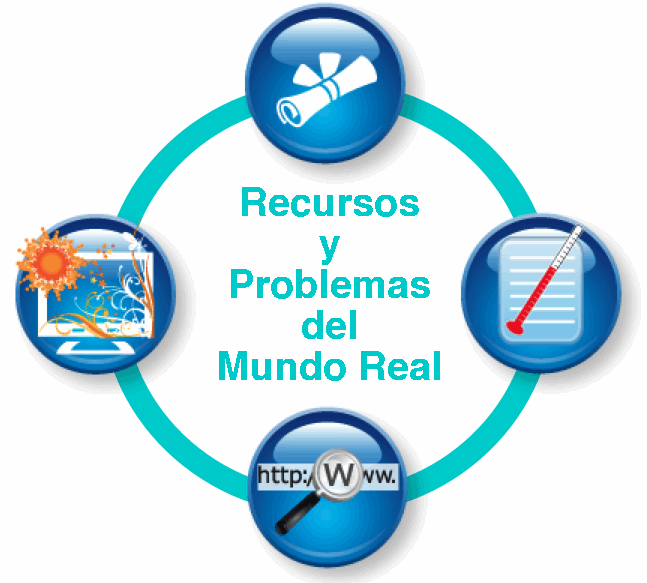

|
 |
 |
 |
 |  |
[Volver a la página principal del Rango de Uso] [Ver escenarios para las Herramientas de Construcción y Análisis]
Herramientas de Construcción y Análisis:
Incluye tecnologías que permiten a los estudiantes analizar y manipular
datos y crear representaciones del conocimiento de formas variadas y a
través de diversos medios.
|
Herramientas de Creación y Publicación de Documentos
[cursor sobre imagen para definición] |
Herramientas para Análisis de Datos y Resolución de Problemas
[cursor sobre imagen para definición] |
Herramientas de Visualización/Herramientas Multimodales
[cursor sobre imagen para definición] |
Herramientas de Construcción Tecnológica
[cursor sobre imagen para definición] |
Escenarios para las Herramientas de Construcción y Análisis
| Título (click en el título para ver el escenario) |
Categorías representadas [cursor sobre imagen para descripción] |
Nivel | Área de contenido |
| Héroes y Conciencia Cultural |   |
Secundario |
Lengua y Literatura Ciencias Sociales |
| Animales y su Medioambiente |  |
Primario | Ciencias Naturales |
| Figuras Geométricas |    |
Tercer Ciclo | Matemática |
| Nutrición y Medioambiente |  |
Tercer Ciclo | Ciencias Naturales |
| Fotografías y el Mundo Cambiado |  |
Secundario | Ciencias Naturales |
| Mensajes Mediáticos para Niños |  |
Primario | Ciencias Sociales |
| El Diario de Ana Frank |   |
Primario | Lengua y Literatura |
| Campaña de Reciclaje | |
Secundario | Ciencias Naturales |
| Simulando la Selección Natural | |
Tercer Ciclo | Ciencias Naturales |
| Colaboración Intercultural |  |
Secundario | Ciencias Sociales |
| Razones y Proporciones en el Mundo Real |   |
Secundario |
Ciencias Sociales |
| Anatomía de la Célula en Animales y Plantas | |
Tercer Ciclo | Ciencias Naturales |
| Encuesta sobre la Plaza de la Ciudad | |
Tercer Ciclo | Ciencias Sociales |
| Explicaciones de Video para Lengua | |
Primario | Lengua y Literatura |
| Recolección de Datos y Graficación | |
Primario | Matemática |
| Individualizando la Enseñanza con Explicaciones en Video | |
Secundario | Matemática |
| Fuentes Primarias para la Historia Africana | |
Tercer Ciclo | Ciencias Sociales |
|
Tercer Ciclo | Ciencias Naturales, Ciencias Sociales | |
| Sistema de Respuestas en Clase de Matemáticas | |
Tercer Ciclo | Matemática |
| Calentamiento Global | |
Secundario | Ciencias Naturales |
| Calculando el Área de Rectángulos |  |
Primario | Matemática |
| Explorando la Roma Antigua | |
Secundario | Ciencias Sociales |
| Poesía con Second Life | |
Tercer ciclo | Lengua y Literatura |